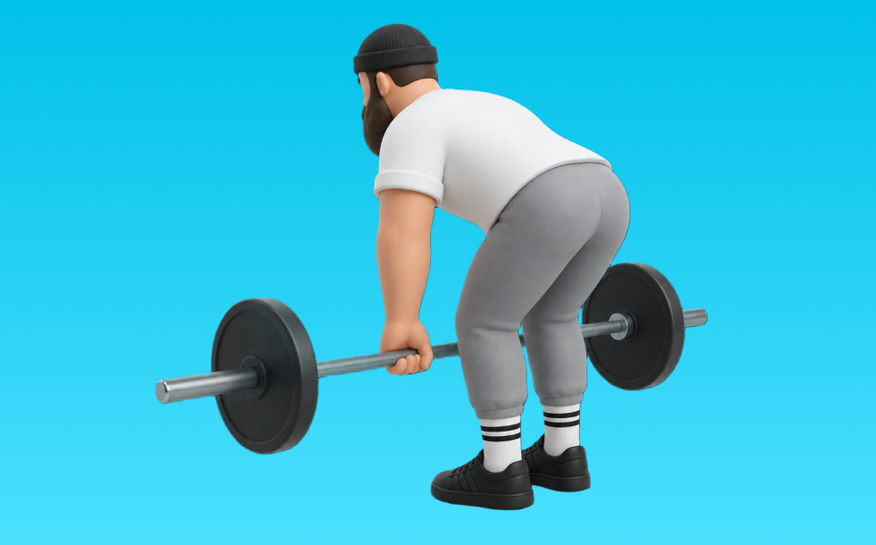

ルーマニアンデッドリフト

ルーマニアンデッドリフトとは、バーベルを使って「股関節で持ち上げる」動作で臀筋、ハムストリング、脊柱起立筋を鍛える種目です。高重量を扱いやすく、筋力を伸ばしやすいのが特徴で、背すじを保ち、股関節で持ち上げてゆっくり下ろす動作を繰り返します。下半身の筋力・筋量アップが期待できます。
- 対象部位
- 脚
- 器具
- バーベル
- 記録形式
- 重量・回数
- 別名
- RDL
YouTube動画
-
【脚筋トレ】ルーマニアンデッドリフトの正しいフォーム・やり方 | 「腰が痛い」「ダンベルでハムストリング鍛えたい」という方必見！
-
【ルーマニアンデットリフト】腰を痛めずハムストリングスを効率良く鍛えるフォーム解説
-
【ルーマニアンデッドリフト】腰を痛めずにお尻とハムストリングスを鍛えるフォーム【ダンベル】
-
【初心者】ルーマニアンデッドリフトの正しいやり方 | お尻とハムストリングを強く太くする種目【ビーレジェンド プロテイン】
-
【ルーマニアンデッドリフト】腰を痛めないフォームとハムストリングスの鍛え方【筋トレ】
-
腰痛を改善するルーマニアンデッドリフトのやり方【フォーム解説】
-
【初心者必見】ルーマニアンデッドリフトが絶対できるようになる3つのステップ
-
ルーマニアンデッドリフトのやり方｜ハムストリングスを強く太くする！【筋トレ】
-
ルーマニアンデッドリフトのやり方解説！【ダンベル】【筋トレ】
-
ルーマニアンデッドリフトで腰に痛みが出る４つの原因を改善
-
【スミスマシンデッドリフト】重量・マシンの向き〜背中に効かせるやり方まで徹底解説
-
【デットリフト vs ルーマニアンデットリフト】違い・メリット解説
-
【家トレ】ダンベルでもも裏を引き締めよう！ルーマニアンデッドリフト
-
【腰痛い人必見】デッドの達人が教えるルーマニアンデッドリフトで腰の痛みを無くせ！
-
【脚トレ】ルーマニアンデッドリフト【Training Library】
-
そのデッドリフト間違ってます。デットリフトの正しいやり方はこれです。
YouTubeショート
-
【ルーマニアンデッドリフト】腰を痛めない正しいやり方
-
【ダンベル】ルーマニアンデッドリフトの特徴とフォーム解説
-
正しいルーマニアンデッドリフト教えます！
-
【比較】ルーマニアンデッドリフトVSデッドリフト #セミパーソナルジム #トレーニング #くびれ
-
ルーマニアンデッドリフトよくあるエラー #デッドリフト
-
【脚トレ解説】ダンベル・ルーマニアンデッドリフト #筋トレ解説 #脚トレ #尻トレ
-
【SGIR】ルーマニアンデッドリフト意識すべき点
-
デッドリフトの正しいやり方 #フィットネス #筋トレ #デッドリフト
-
"基本のルーマニアンデッドリフト"3つのポイント #筋トレ#フィットネス#ルーマニアンデッドリフト#ヒップヒンジ
-
【腰が疲れる】ルーマニアンデッドリフトでよくある間違い #初心者 #筋トレ
-
【腰痛改善】ルーマニアンデッドリフトの正しいやり方
-
【股関節を強化】ダンベルルーマニアンデッドリフトの正しいやり方 #関節弛緩性 #反り腰
-
正しいデッドリフト4つのポイント#筋トレ #デッドリフト
-
【今すぐ直せ】ルーマニアンデッドリフトで腰を痛める3つの間違い
-
ルーマニアンデッドリフト❣️詳しい解説はYouTubeのショートじゃない方(ってなんていうの？🙈ロング動画？🙈)に載せてます🥰🫶🏽 #shorts
-
【ルーマニアンデッドリフト】腰を痛めない正しいフォーム解説 #shorts
-
【よくある間違い】ハムストリングスを効かせるルーマニアンデッドリフトがダメな理由 #反り腰 #筋トレ
-
【トレーニング】100％お尻に効かせる！ルーマニアンデッドリフトの極意
-
【背中トレ解説】ルーマニアンデッドリフト#筋トレ解説 #脚トレ #脚トレーニング
-
ルーマニアンデッドリフトとスティフレッグデッドリフト#脚トレ #尻トレ #デッドリフト
-
【足痩せ】ハム強化のルーマニアンデッドリフト
-
持田選手に2種類のデッドリフトについてレクチャーしていてもらいました！次はどの種目の解説をやってほしいかコメントしてね！#筋トレ #volix #トレーニング #ちょこっと惜しい
-
デッドリフトをやった方が良い理由をデッドリフトをやりながら解説します！
-
デッドリフト100キロフォームこれで良いでしょうか？#100キロ #筋トレ #デッドリフト
-
【ダンベルを使ったデッドリフトの正しいやり方】筋トレ三巨頭！ その一角を極めよ！｜Training Movie 100｜Tarzan Web
-
床引きデッドリフトができない場合の代替種目は？【筋トレ】
-
ルーマニアンデッドリフトの効果的な鍛え方 #筋トレ女子 #ダイエット初心者 #ジムニー
-
【よくある間違いルーマニアンデッドリフト】 #ダイエット #筋トレ #新座市 #志木市 #ルーマニアンデッドリフト
-
持田選手にダンベルでできるデッドリフトについてレクチャーしていてもらいました！次はどの種目の解説をやってほしいかコメントしてね！
-
ルーマニアンデッドリフトは最高の種目。#shorts
動作方法
- 背中を中立に保ち、股関節から動き始める
- もも裏の張りを感じる位置まで下ろす
- 足裏で床を押して立ち上がる
動作ポイント
- 背中を丸めない
- 膝を伸ばしきらない
- バーや重りを体から離しすぎない
ワンポイントアドバイス
- ウォームアップで股関節と足首を動かす
- 高重量の日はセーフティ設定を確認する
目的別回数設定
目的や体力に応じた一般的な目安です。無理のない範囲で調整してください。
- 筋力アップ
- 1〜5回
- 筋肥大
- 6〜12回
- 持久力アップ
- 13〜20回
YouTube動画について
動画はYouTubeの公開情報をもとに表示しています。内容は投稿者によるもので、Biggrによる監修ではありません。
アプリを入手
筋トレやトレーニングの記録はBiggrにお任せください。今すぐ無料で使い始められます。